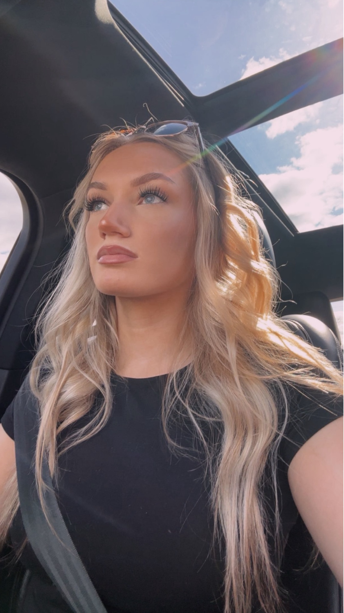

Makeup is something I genuinely love because it lets me accentuate my features in a way that makes me feel confident and put together. My favorite part of my makeup routine is definitely my eyelashes. I used to wear mascara religiously, but after losing so many lashes from curling them several times a day, I made the switch to false lashes—and I've never looked back. Now, I tell people to imagine their face without eyebrows, and that's exactly how I feel when I don’t have my false lashes on: naked. Applying them has become second nature, taking only ten to fifteen minutes, but they last me about a week or even longer. The best part about my lashes is that they make the rest of my makeup routine much faster. What used to take ten minutes just to do my mascara now takes the same amount of time for my entire face! When it comes to makeup products, I don't typically splurge on high-end brands, except for my foundation and concealer—those are the essentials I can justify spending a bit more on.
I chose to use this picture becuase my makeup was freshly done. This is a little heavier than my day to day look.
This is another picture that's another example of my day to day look.